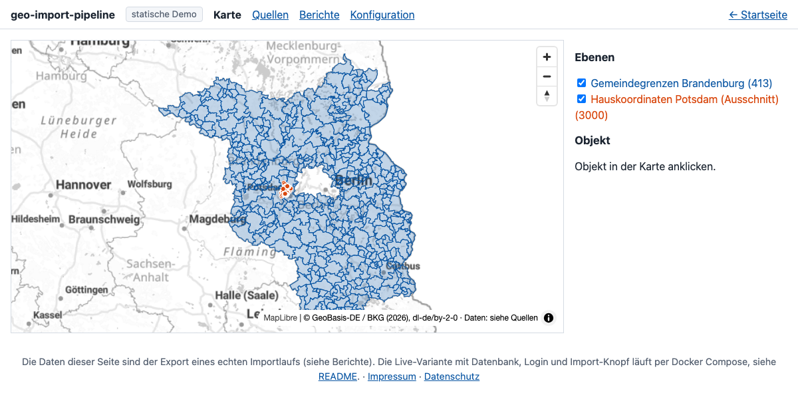
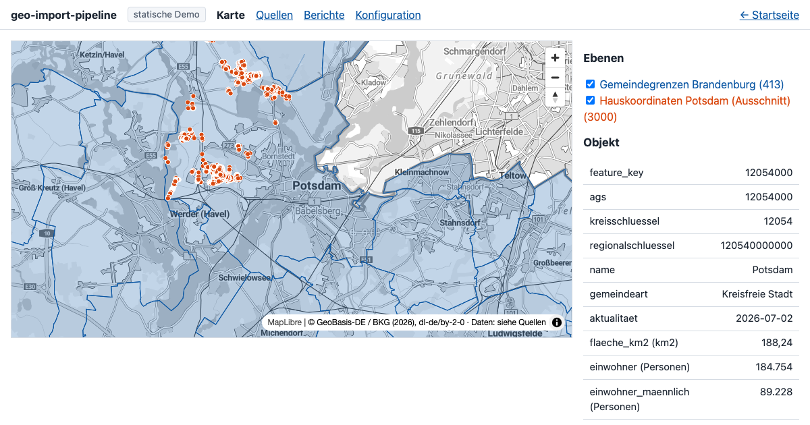
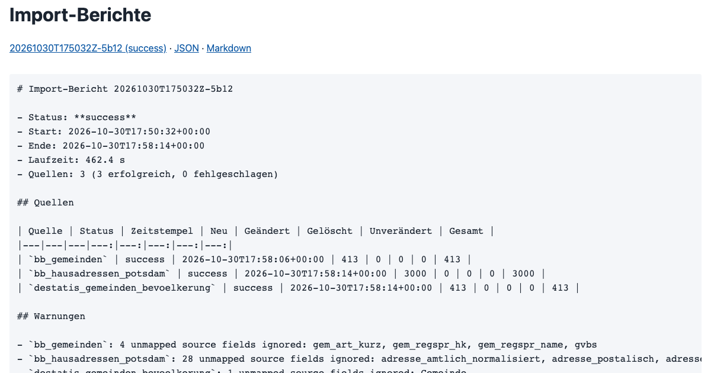

Was es kann
- WFS und CSV: WFS 1.x/2.0 mit Paginierung, GML und GeoJSON; CSV mit erkanntem Zeichensatz und Trennzeichen, Geometrie aus WKT, Koordinatenspalten oder per Gemeindeschlüssel-Join.
- Einheitliches Datenmodell: drei Tabellen (Metadaten, Geometrien, Attribute) in EPSG:4326, beliebige Attributschemata ohne Schemaänderung.
- Import-Bericht je Lauf: JSON und Markdown mit neu/geändert/gelöscht je Quelle, Laufzeit, Warnungen und Fehlerursachen.
- Neue Quellen per Konfiguration: eine YAML-Datei pro Quelle, keine Codeänderung.
- Zeitgesteuert und manuell: Cron-Ausdrücke im Container,
geo-import runauf der Kommandozeile. Fällt eine Quelle aus, laufen die anderen weiter, der Bestand der ausgefallenen bleibt unverändert. - Open Source: Apache-2.0, nur OSI-lizenzierte Komponenten, Lizenzübersicht im Repository.
So schauen Sie sich die Demo an
- Demo öffnen. Die statische Demo braucht keine Anmeldung.

- Karte ansehen. Gemeindegrenzen und Hausadressen ein- und ausblenden, ein Objekt anklicken: die Attribute (Einwohner, Fläche, Aktualität) stammen aus der CSV und hängen über den Gemeindeschlüssel an der Geometrie.

- Bericht und Konfiguration lesen. Der Import-Bericht zeigt neu, geändert, gelöscht je Quelle. Die YAML-Dateien zeigen, dass eine neue Quelle nur Konfiguration ist.

Die Demo-Daten sind öffentliche Open Data. Diese Seite ist ein statischer Export eines echten Importlaufs. Die Variante mit Datenbank, Login und Import-Knopf startet man selbst per Docker Compose (siehe „Selbst ausprobieren“).
Wie es funktioniert
history behält Vorgängerstände.Selbst ausprobieren
git clone https://github.com/julianmlrao/geo-import-pipeline.git cd geo-import-pipeline cp .env.example .env # set POSTGRES_PASSWORD docker compose up -d --build docker compose exec importer geo-import run --all docker compose exec importer geo-import report
Voraussetzung: Docker mit Compose. Der erste Import dauert je nach Antwortzeit der Dienste einige Minuten.
Datenquellen und Lizenzen
- Gemeindegrenzen und Hausadressen: © GeoBasis-DE/LGB, dl-de/by-2-0 (Daten geändert), Dienste
vg_wfsundgaz_wfsder Landesvermessung und Geobasisinformation Brandenburg. - Fläche und Einwohner je Gemeinde: © Statistische Ämter des Bundes und der Länder (Destatis), Gemeindeverzeichnis GV-ISys, dl-de/by-2-0, Gebietsstand 30.06.2026.
- Hintergrundkarte: © GeoBasis-DE / BKG, basemap.de, dl-de/by-2-0.
- Kartenbibliothek MapLibre GL JS (BSD-3-Clause). Weitere Komponenten: THIRD_PARTY_LICENSES.md.